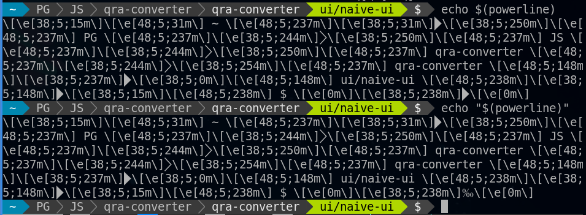

TL;DR
それはいつものようにコーディングに取り掛かろうとした矢先のことでした。
私のシェルもついに反抗期を迎えたようです。
プロンプトの表示が突然おかしくなり、改行もされなくなってしまいました。
事象
プロンプトはpowerlineっぽい表示ですが、このプロンプトを生成するコマンドはRustで自作しています。
問題なのは、このプロンプトが特定の文字数になった時だけバグが起きてしまうということです。
つまり、プロンプトの表示幅が64文字になった時にだけこのような現象が生じたということです。
なので、例えばブランチ名を1文字だけ増やしたり減らしてみたりすると、この現象は解消されます。
原因
先に原因だけ書いてしまうと、プログラムの出力結果をPS1に反映させる部分に問題がありました。
具体的には以下のコードです。
1
2
3
4
5
| // .bashrc
function _update_ps1() {
PS1="$(~/bin/powerline $?)"
}
|
powerlineコマンドの出力結果を文字列にしてPS1に代入しています。
一見何の変哲もないこのコードですが、何が問題かは次の比較結果を見れば解ると思います。

なんと、""で括っただけで結果が変わってしまいましたね。。。
これがBashのバグなのか使用なのかは結局分かりませんでしたが、コマンドの出力結果をそのまま環境変数に代入するときは、""で括らないほうが良さそうです。
対処法
以下のように""で括らなくしてあげれば良いだけです。
1
2
| - PS1="$(~/bin/powerline $?)"
+ PS1=$(~/bin/powerline $?)
|
あるいはBack quotes(`)を使っても良いでしょう。
1
2
| - PS1="$(~/bin/powerline $?)"
+ PS1=`~/bin/powerline $?`
|
補足：原因を見つけるまで
プロンプト生成プログラムのテスト
プロンプトの表示を自作しているので、まず真っ先に自分が作ったプログラムを見直しました。
↓ブランチ名の長さを変えてコマンド出力結果を確認
1
2
3
4
5
6
| $ git branch -m ui/naive-ui
$ powerline
\[\e[38;5;15m\]\[\e[48;5;31m\] ~ \[\e[48;5;237m\]\[\e[38;5;31m\]\[\e[38;5;250m\]\[\e[48;5;237m\] PG \[\e[48;5;237m\]\[\e[38;5;244m\]\[\e[38;5;250m\]\[\e[48;5;237m\] JS \[\e[48;5;237m\]\[\e[38;5;244m\]\[\e[38;5;250m\]\[\e[48;5;237m\] qra-converter \[\e[48;5;237m\]\[\e[38;5;244m\]\[\e[38;5;254m\]\[\e[48;5;237m\] qra-converter \[\e[48;5;148m\]\[\e[38;5;237m\]\[\e[38;5;0m\]\[\e[48;5;148m\] ui/naive-ui \[\e[48;5;238m\]\[\e[38;5;148m\]\[\e[38;5;15m\]\[\e[48;5;238m\] $ \[\e[0m\]\[\e[38;5;238m\]\[\e[0m\]
$ git branch -m ui/naiveui
$ powerline
\[\e[38;5;15m\]\[\e[48;5;31m\] ~ \[\e[48;5;237m\]\[\e[38;5;31m\]\[\e[38;5;250m\]\[\e[48;5;237m\] PG \[\e[48;5;237m\]\[\e[38;5;244m\]\[\e[38;5;250m\]\[\e[48;5;237m\] JS \[\e[48;5;237m\]\[\e[38;5;244m\]\[\e[38;5;250m\]\[\e[48;5;237m\] qra-converter \[\e[48;5;237m\]\[\e[38;5;244m\]\[\e[38;5;254m\]\[\e[48;5;237m\] qra-converter \[\e[48;5;148m\]\[\e[38;5;237m\]\[\e[38;5;0m\]\[\e[48;5;148m\] ui/naiveui \[\e[48;5;238m\]\[\e[38;5;148m\]\[\e[38;5;15m\]\[\e[48;5;238m\] $ \[\e[0m\]\[\e[38;5;238m\]\[\e[0m\]
|
フォントの関係で一部豆腐文字が表示されていますが、ローカルで確認した限りでは問題は見当たりませんでした。
一応xxdでバイナリコードも確認してみましたが、両者の違いはブランチ名だけでした。
他のターミナルで試してみる
次に調査したのは自分が使用しているQTerminalというアプリケーションです。出力が正しいならばレンダリング側（ターミナル）に問題があるのではないかと思われましたが、Neovim-qtのターミナルでも同じような事象が発生したため、どうやらターミナルの問題でもなさそうです。
PS1への反映部分
完全に行き詰まって悩んでいた自分でしたが、ここで一つの疑問が浮かびました。
「そういえばPS1の値ってどうやって更新してるんだっけ？」
そんなふとした疑問から、.bashrcの内容を確かめてみました。
1
2
3
4
5
6
7
8
9
| if [[ -x ~/bin/powerline ]]; then
function _update_ps1() {
PS1="$(~/bin/powerline $?)"
}
if [[ ! $PROMPT_COMMAND =~ _update_ps1 ]]; then
PROMPT_COMMAND="_update_ps1;$PROMPT_COMMAND"
fi
fi
|
今までコマンドの出力結果の文字列への埋め込みといえば"$(...)"のパターンが定石だと思っていましたが、そんな定石が崩れた瞬間でした。